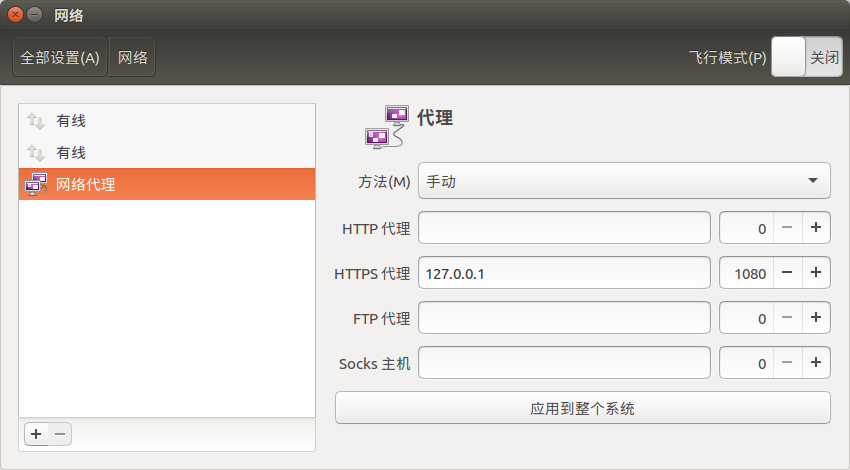
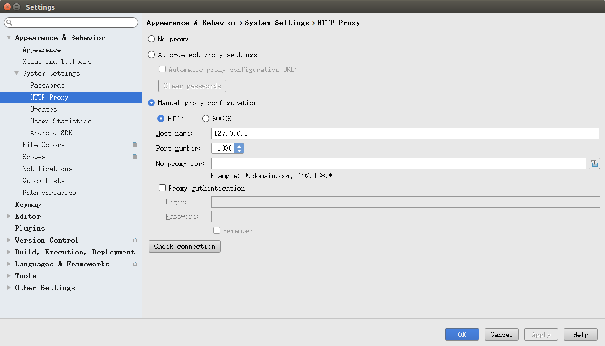

这几天给实验室的台式机搭建了Android环境，主要涉及到双系统安装、科学上网等内容，期间遇到了一些问题，发现网上的博客介绍得并不清楚，在这里记录一下。
Windows10、Ubuntu双系统安装
我是在Windows10的基础上再装Ubuntu系统，然后做一个启动引导完成双系统的安装，大体分以下几个步骤：
- 分割磁盘、Windows10相关的一些系统设置
- 下载Ubuntu镜像，使用Rufus制作启动U盘
- 从U盘启动，安装Ubuntu（主要涉及到磁盘分区）
- 在Windows10系统中使用EasyBCD添加新的启动项
这一部分内容网上的博客比较多，内容也比较详细，我主要参考的是这一篇文章：Windows + Ubuntu 16.04 双系统安装详细教程
Ubuntu无法联网
安装好Ubuntu系统后，遇到的一个主要问题就是无法联网。主要表现为插上网线后系统提示有线连接无法连接，使用ifconfig查看网卡信息发现获取不到ip地址。但是Windows10系统确能正常上网，因此排除是硬件问题。
后来发现问题出在Windows系统上而不是被我反复折腾的Ubuntu系统上。由于Windows的设备管理问题，系统关闭之后网卡可能仍然处于通电状态，于是Ubuntu系统就不能正常使用网卡，也就无法联网了。
解决办法有两种：
在"我的电脑"->"管理"->"设备管理器"->"网络适配器"->"对应的网卡"->"属性"->"电源管理"里关闭网络唤醒功能。
直接在网络控制中心中禁用以太网，下次使用Windows系统时需要重新打开。
网络唤醒：Wake-on-LAN简称WOL或WoL，它的功效在于让已经进入休眠状态或关机状态的计算机，透过局域网（多半为以太网）的另一端对其发令，使其从休眠状态唤醒、恢复成运作状态，或从关机状态转成引导状态。（摘自百度百科）
科学上网
众所周知，想要进行Android应用的开发和测试，科学上网是必不可少的。Android Studio在构建项目的过程中会经常从Google的服务器拉取相关依赖，一些大的项目的依赖比较多，因此对网速要求也比较高。
关于VPS服务器的搭建这里不作介绍，主要介绍Ubuntu client端的配置。
过去Shadowsocks只支持socks5协议，现在又增加了对http(s)协议的支持。推荐选择http(s)协议，因为使用这种协议后，就不用对浏览器进行额外配置（Chrome需要安装SwitchyOmega插件）。
完成Shadowsocks相关内容的配置之后，还需要对Ubuntu系统进行配置，这一点相比macOS、Windows等系统更加繁琐一些，如果使用的是http协议，那么只需要在"系统设置"->"网络"->"网络代理"中按照下图进行配置即可：

此时通过浏览就能访问到一些特殊的网站了。对于Android Studio，在"File"->"Settings"->"Appearance&Behavior"->"System Settings"->"HTTP Proxy"中进行如下配置即可：

如果Shadowsocks采用socks协议的话也类似，只要把这两部分的配置也同样改成socks协议。只不过需要对浏览器额外安装插件，将http协议转换成socks协议然后再交给Shadowsocks进行转发。
Shadowsocks、系统代理配置、Android Studio代理配置三者关系
Shadowsocks：仅在相应端口架设基于http(s)或socks5协议的代理服务。
Ubuntu系统代理：如果启用该选项，那么软件会在浏览器等软件的设置里添加相应的代理配置。这样，支持这种代理设置的软件就会自动遵循设置，将相关协议的数据导向Shadowsocks服务端口。事实上，支持系统代理的软件非常少，一般来说只被浏览器普遍支持。
Android Studio等软件通过自行定义代理，自动将数据导向Shadowsocks服务端口，这种情况下不依赖系统代理设置。